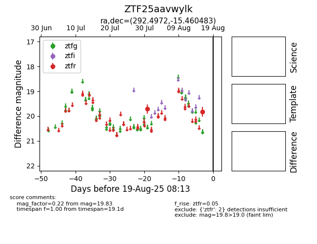

Target ZTF25aavwylk at 2025-08-19 08:13, see:
FINK: fink-portal.org/ZTF25aavwylk
Lasair: lasair-ztf.lsst.ac.uk/objects/ZTF25aavwylk
ALeRCE: alerce.online/object/ZTF25aavwylk
alt names
ZTF25aavwylk (ztf,fink)
coordinates:
equatorial (ra, dec) = (292.4972,-15.46048)
galactic (l, b) = (23.1589,-15.37657)
photometry
last ztfr=19.83
2 ztfr detections
